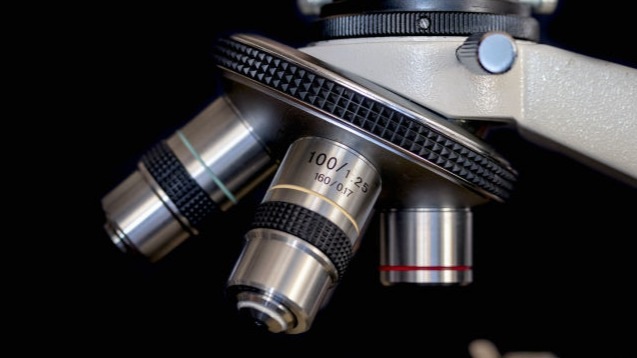

Projects / connected programmes
What we have built
with others.
We helped create international programmes for sampling animal hologenomes, resolving host–microbe interactions in three dimensions and applying hologenomics to food production.

From microscale to planet-scale
International collaborations
Three programmes
we helped create.
Each began with a research problem that needed more samples, methods and expertise than one lab could provide.
Inside the lab
Projects we are working on now.
Current group members and collaborators lead these focused parts of our research.
Micro-scale multi-omics
Carlotta Pietroni, Marta Contreras and Jonas Lauritsen.
Chicken hologenomics
Sofia Marcos, Iñaki Odriozola and Jorge Langa.
Squirrel hologenomics
Aoife Leonard.
Behavioural hologenomics
Luisa Nielsen.
Hologenomic adaptation
Garazi Martin and Ostaizka Aizpurua.
Gut-on-a-chip
Kees Blijleven, Michael Miskelly and Ostaizka Aizpurua.